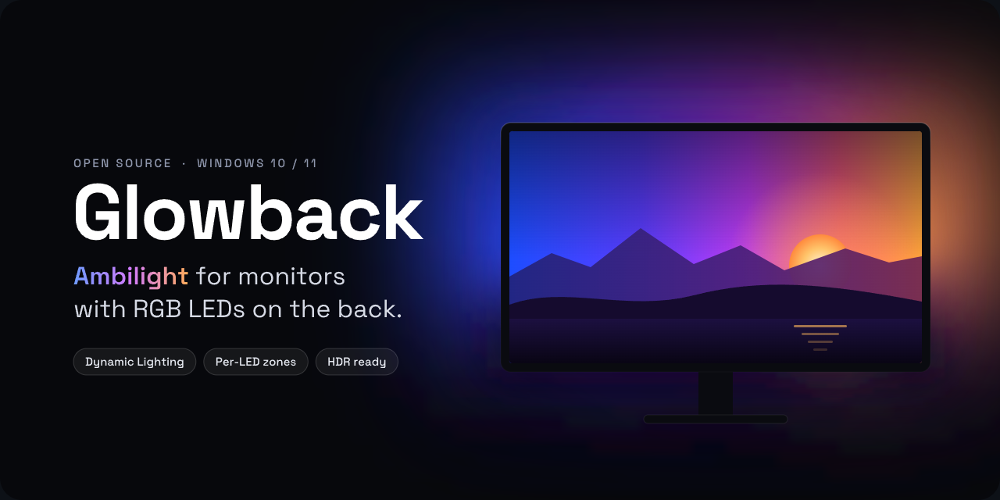

Glowback makes each LED on the back of your monitor follow the part of the picture in front of it, in real time. It's free and open source. No LED strip, camera or vendor app needed, and it works with any Windows 11 Dynamic Lighting device, starting with the AOC AGON PRO Light FX.
Each LED is mapped to the nearest screen edge, like an Ambilight TV, using the LED positions the device reports.
GPU capture sees fullscreen video and games, handles HDR, and ignores movie black bars.
A tray icon to pause it or change mode and brightness, optional start with Windows, a Start menu entry and a one-command uninstall.
About 0.5 ms of CPU per frame. One Python file, zero dependencies, MIT license.
pip install git+https://github.com/Ilyomix/glowback
glowback --installTo uninstall: glowback --uninstall, then pip uninstall glowback (or delete the .exe). Full guide.
| Device | Status |
|---|---|
| AOC AGON PRO AG276QZD2 (Light FX, 47 LEDs) | ✅ Tested |
| Other monitors, LED strips, cases and lamps listed in Windows Dynamic Lighting | 🟡 Should work. Report yours |
Run glowback --openrgb to sync ARGB strips, cases and anything else OpenRGB supports with your screen.
No RGB on your monitor? Add an LED strip and a $5 RP2040 board: step-by-step guide.
glowback --calibrate tunes each device so the light on your wall looks neutral white.
Install Glowback, turn off Windows Dynamic Lighting for the monitor, and run glowback --install. The rear LEDs then follow the picture automatically.
Not with AOC's own software, which only has preset effects. The Light FX controller of the AG276QZD2 supports the Windows Dynamic Lighting standard, which Glowback uses to sync each LED with the screen.
Yes, if the monitor has RGB LEDs on the back that support Windows Dynamic Lighting. Glowback uses those LEDs directly.
Yes. GPU capture (DXGI) handles fullscreen and borderless games, video players and HDR desktops, and movie black bars are ignored. DRM-protected streams are usually blacked out by Windows for every capture tool.
Run glowback --uninstall, then pip uninstall glowback, or delete the .exe. The LEDs return to the effect set in the monitor's menu.